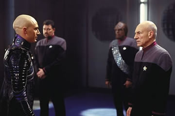
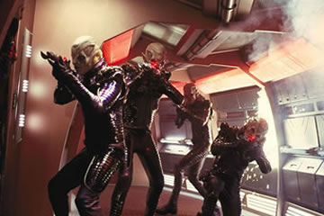
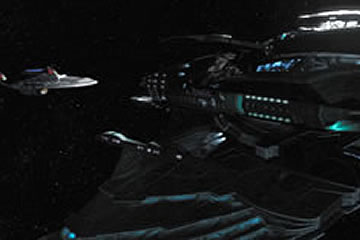
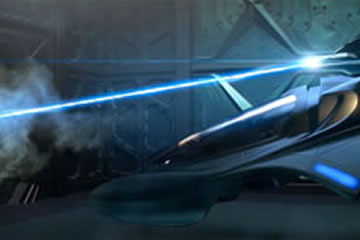
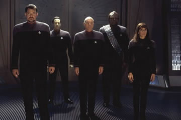

|

Publicado como artigo de
Especiais em janeiro de 2003


|

|
Ao sair do cinema sexta-feira após ter visto Nêmesis, várias perguntas ecoavam em minha cabeça. Por que Shinzon tem sotaque britânico se ele foi criado por Remans? Ele fala inglês fluente? O tradutor universal traduziu com sotaque? Por que ele é totalmente careca se até Picard tem alguns fios de cabelo? Ele raspou a cabeça para se parecer com o capitão? Mas ele já conhecia o capitão por alguma imagem? Afinal, Shinzon o esperava mais alto...  Eu sei que esse tipo
de pergunta só surge na mente de um fã de Jornada nas
Estrelas, mas o público em geral dificilmente engoliria uma
nave dando ré no Espaço para se soltar de outra que se chocou
com ela. O que estava segurando a Enterprise fixa no Espaço
enquanto a Scimitar se soltava dela? Era para as duas se
movimentarem juntas! Mesmo assim, no roteiro de John Logan, esse
atentado contra as leis da Física se encontrava. Roteiro, aliás,
baseado em Jornada nas Estrelas II pelo jeito.  Algumas falas soam
inacreditavelmente ridículas. Picard pergunta a Shinzon qual o
motivo de tê-lo raptado da Enterprise. Shinzon responde "Eu
estava sozinho". No casamento de Riker, Picard mostra-se
bêbado. Não é possível um roteirista escrever tantas frases
idiotas para um personagem supostamente sóbrio como Picard. Outro
ponto levantado por uma fã de Jornada após a sessão foi
o motivo de todos estarem com uniformes de gala e Troi com um
terrível vestido rosa. Mas esse é o menor dos problemas (se é
que é um) e somente sendo muito nitpicker para se perguntar isso,
mas que é engraçado, isso é.  Nêmesis tem
sérios furos em seu roteiro e mesmo assim quer ser muito pretensioso.
Traz um vilão inverossímil e tagarela com uma voz irritante e
coadjuvantes sem carisma algum. O Vice-Rei e a comandante Donatra
são terríveis e seus intérpretes, o talentoso Ron Perlman
("Blade II") e a linda Dina Meyer ("Starship
Troopers" e "Birds of Prey") devem se lamentar de
terem aceito seus papéis, embora devam ter embolsado um bom
dinheiro. Michael Dorn jamais deveria retornar como Worf, o
palhaço da turma. O cara é um Klingon honrado e com uma
história riquíssima construída durante A Nova Geração e
Deep Space Nine. Dá pena ver o que fizeram com o
personagem em Generations (banho de água fria no Holodeck),
Insurreição (espinha na cara) e Nêmesis
(simplesmente tudo).  Aliás, falando em
Janeway, eu gostei da participação da agora almirante no filme.
Dá para ouvir os comentários no cinema quando ela aparece. É
bem melhor colocar um rosto conhecido do que um almirante Hayes,
ou algo do gênero. Também foi legal ver por um segundo
Bryan Singer, o diretor de "X-Men" e "X-Men
2". Lembrei-me da aparição de Christian Slater em Jornada
VI, embora essa tenha sido bem maior, cerca de 30 segundos.  |